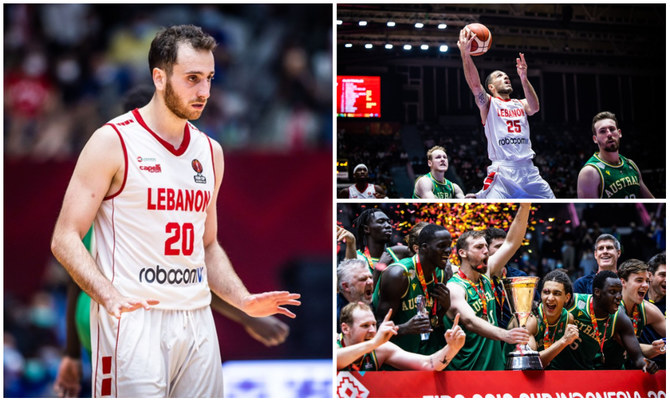

The first upset begin when Lebanon ranked 47 defeated jordan ranked 39 76-57 securing the first sport. in the final four. With an outstanding performance from Wael Arakji who score 28 points, while Jonathan Arledge the best performer from the Jordan cup only scores 16 point with 10 rebounds.The lebanese defence was unbreakable, putting Jordan on a 30% shooting percentage from the field.
Despite all odds the young coach Jad El-Hajj continue the streak by a sliver of a point ending the match 67-65. Despite this small difference it boosted the lebanese team to take on the Australian team in the final hoping for the first time Lebanon achieve the Fiba Asia Cup. The man of the match was none other than Wael Arakji 24 points 5 assists carrying his teammate, the rest of the team also delivered a good defence as China only had a 40% shoot percentage.
Dreaming for it's first Asia cup, the lebanese team entered the court with an unpected behavior, it was clear that the pressure finally got to its head as he struggled in the first three quarters causing the Australian team to take the lead by 18 points but in the last minute Lebanon lowered the difference by only 6 points, Despite Wael Arakji being man of the match with 26 points,the match ended 79-76 for the Australian team with that Australia took its third asia cup in 4 years.
